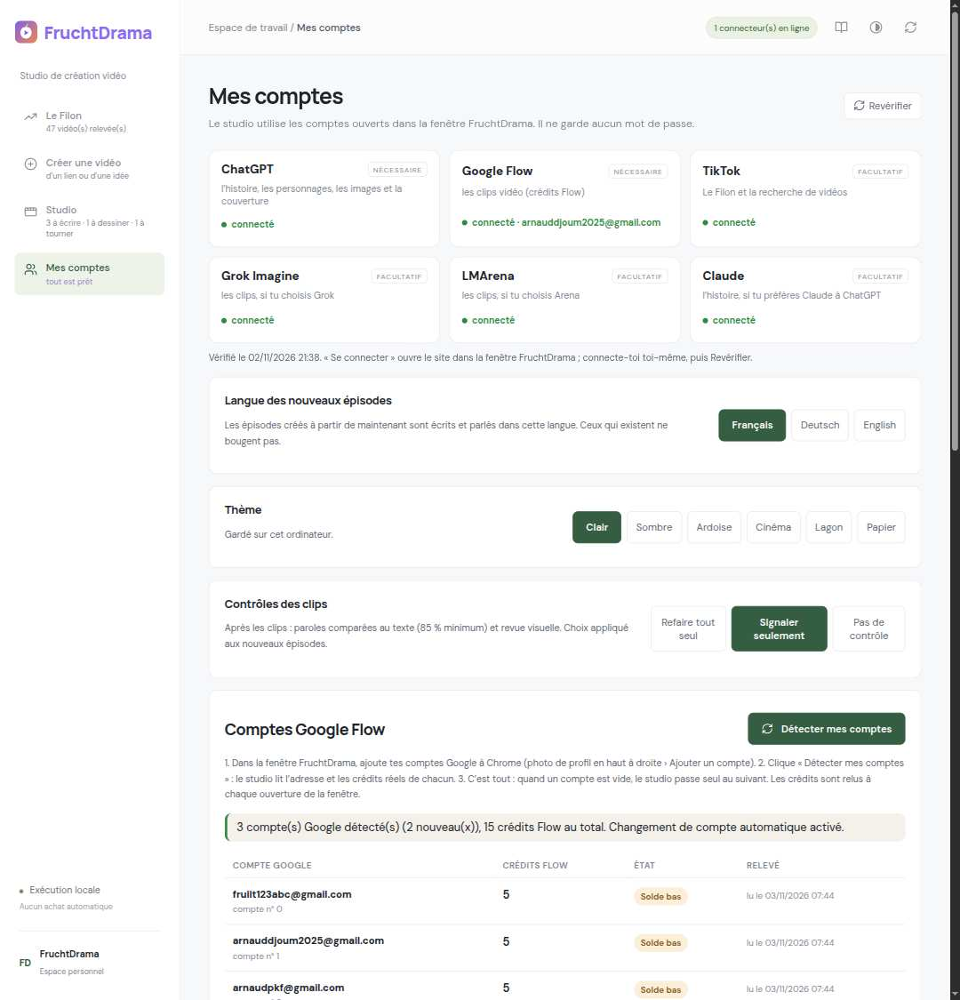
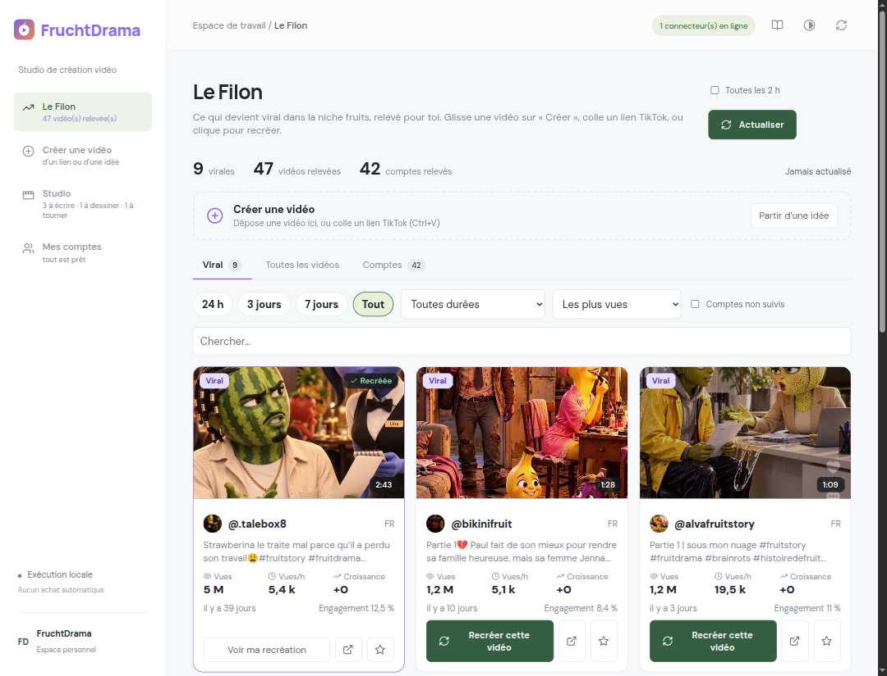
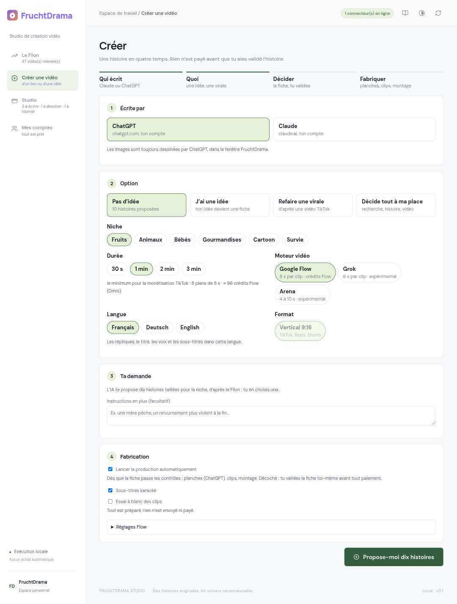
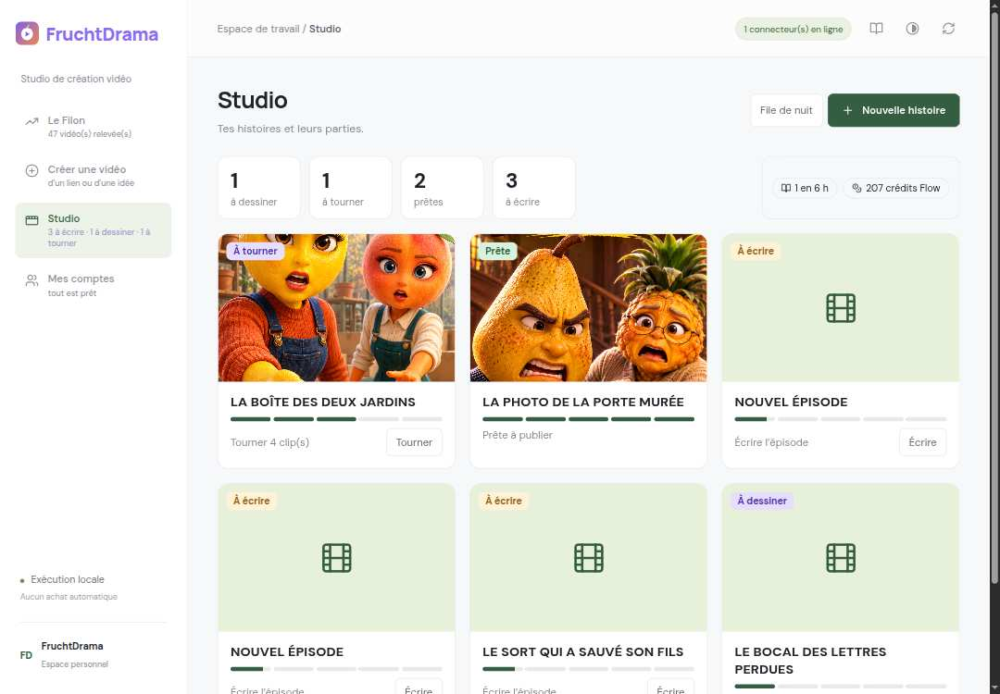
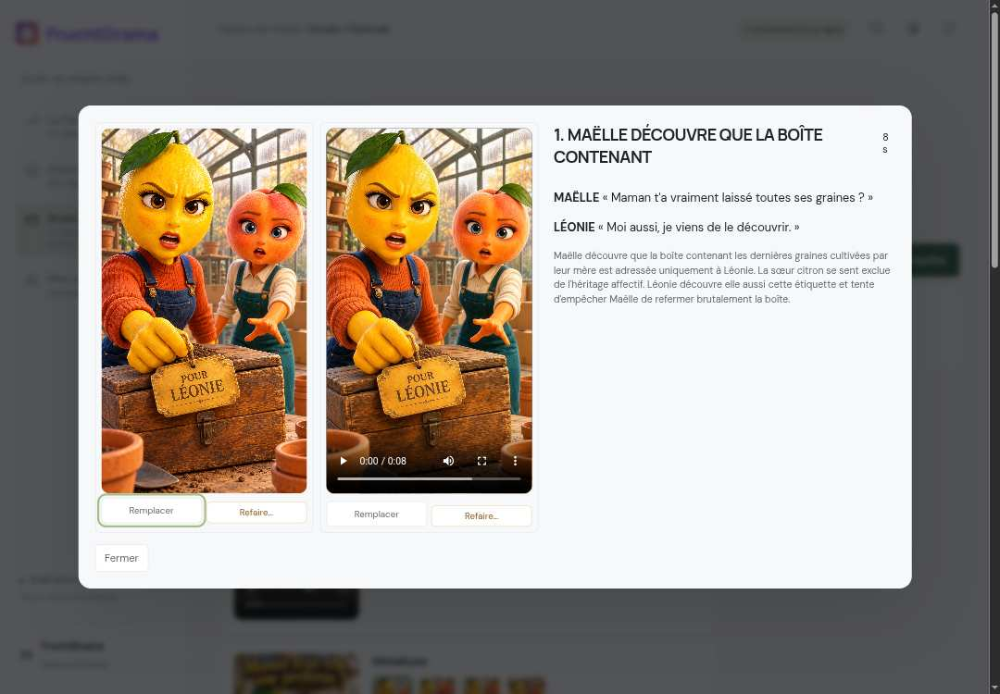
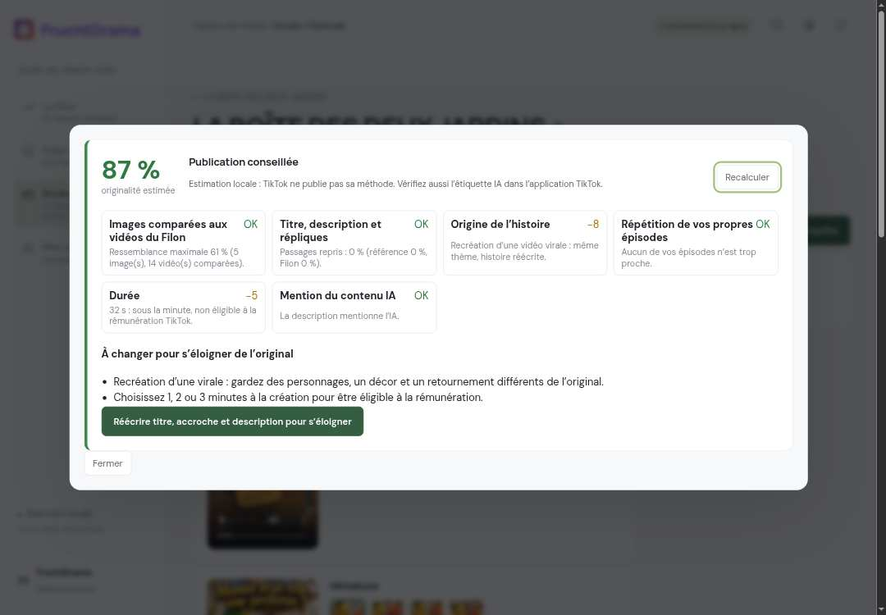

De l'installation à la publication TikTok d'une vidéo complète, étape par étape.
Logo FruchtDrama
0. Ce qu'il faut envoyer à un abonné
À envoyer
Nom exact du fichier
Où le trouver
Le logiciel complet
FruchtDrama-a-partager.zip
Bureau › dossier FruchtDrama
Ce guide
GUIDE-UTILISATEUR.pdf
Bureau › FruchtDrama › Documentation
Envoi conseillé : WhatsApp (en « Document », pas en « Photo »), Google Drive ou e-mail (le zip fait environ 3 Mo). Message type :
Voici FruchtDrama. 1) Dézippe FruchtDrama-a-partager.zip dans tes Documents. 2) Suis GUIDE-UTILISATEUR.pdf depuis l'étape 1. Il faut Google Chrome, Python 3.11 ou 3.12 et FFmpeg (le guide explique tout).
L'abonné doit avoir ses propres comptes (ChatGPT, Google Flow, et si voulu Grok, Claude) : rien n'est partagé, aucun mot de passe n'est demandé.
1. Installer (une seule fois)
Dézipper FruchtDrama-a-partager.zip dans Documents (dossier FruchtDrama).
Installer Python 3.11 ou 3.12 (python.org, cocher « Add Python to PATH ») et FFmpeg (le studio indique s'il le trouve).
Double-cliquer Installer.cmd (Windows) ou lancer installer.sh (Linux).
Double-cliquer Lancer-Studio.cmd : le studio démarre sur http://127.0.0.1:8840.
2. Ajouter l'extension (le « plugin ») à Chrome
Dans Chrome, ouvrir chrome://extensions.
Activer Mode développeur (en haut à droite).
Cliquer Charger l'extension non empaquetée et choisir le dossier FruchtDrama/extension.
La carte FruchtDrama apparaît avec le logo ci-dessus :
Page des extensions avec FruchtDrama
3. Épingler l'extension
Cliquer sur la pièce de puzzle de Chrome, puis sur la punaise à côté de FruchtDrama. L'icône reste dans la barre (encadrée en orange) :
Icône FruchtDrama épinglée
Un clic sur cette icône ouvre la fenêtre FruchtDrama : le studio, plus ChatGPT, Grok et Flow dans des onglets, avec vos sessions. À l'ouverture, les sites sont revérifiés et les crédits de vos comptes relus. Rien à copier : l'extension se relie seule au studio (clé cachée).
4. Ajouter ses comptes
Page Mes comptes :

Mes comptes
Sites (en haut) : chaque carte dit si vous êtes connecté. « Se connecter » ouvre le site dans la fenêtre ; connectez-vous vous-même une fois (ChatGPT obligatoire, Google Flow obligatoire, les autres facultatifs).
Comptes Google Flow — pour utiliser plusieurs comptes et leurs crédits :
dans la fenêtre FruchtDrama, ajoutez chaque compte Google à Chrome : photo de profil en haut à droite d'une page Google › Ajouter un compte ;
cliquez Détecter mes comptes : le studio lit l'adresse et les crédits réels de chaque compte ;
c'est tout : quand un compte n'a plus de crédits, le studio passe seul au suivant.
États d'un compte Flow : Prêt (paie au moins un clip), Solde bas (ne paie plus un clip à 12 crédits : sauté), Vide (0 crédit).
Réglages de la même page : langue des nouveaux épisodes, thème, contrôles des clips (Refaire tout seul / Signaler seulement / Pas de contrôle).
Bandeau rouge en haut d'une page = un service est à sa limite (ex. « Limite Grok vidéos atteinte, ça revient vers 08:45 »). Attendez, ou connectez un autre compte de ce site puis J'ai changé de compte.
5. Trouver une idée : Le Filon

Le Filon
Les vidéos qui marchent dans la niche, avec leurs vrais chiffres (vues, vues/h, croissance, engagement, durée). Onglets Viral / Toutes les vidéos / Comptes, filtres de période et de durée (« 1 à 3 min, monétisables »). Recréer cette vidéo lance une histoire originale inspirée de celle-ci. Vous pouvez aussi glisser une carte sur « Créer » ou coller un lien TikTok n'importe où.
6. Créer une vidéo

Créer
Écrite par : ChatGPT (ou Claude).
Option : Pas d'idée (10 histoires proposées), J'ai une idée, Refaire une virale (lien TikTok), Décide tout à ma place.
Durée : 30 s (essai), 1 min (minimum pour la rémunération TikTok), 2 min, 3 min — le nombre de plans et le coût Flow estimé s'affichent.
Moteur vidéo (Flow, Grok, Arena), langue, format vertical.
Fabrication : « Lancer la production automatiquement » coché = tout s'enchaîne après la fiche ; décoché = vous validez la fiche vous-même. Réglages Flow : modèle, résolution 1080p si votre compte la propose.
Puis : choisir une des dix histoires, relire la fiche de décision (moteur, obstacle, twist, 3 titres, 3 premières répliques, appel de fin, casting) et Valider. Rien n'est payé avant.
7. Suivre la fabrication : Studio

Studio
Une carte par histoire : étape (À écrire, À dessiner, À tourner, À finir, Prête), barre de progression, prochaine action et son bouton direct. En bas à gauche du menu, En cours montre la production en train d'être faite. Cliquer une histoire montre ses parties :
▶ Boucle complète reprend exactement là où ça s'est arrêté ;
Vidéo finale : 1080 × 1920, sous-titres karaoké, accroche (hook) écrite à l'écran les 3 premières secondes ;
Miniature, Publication, Personnages, Scènes. Un clic sur une scène montre la planche et le clip côte à côte :

Scène : planche et clip
8. Avant de publier : hook et originalité
Hook : la scène 1 s'ouvre sur l'instant le plus fort, la première réplique choc tombe dans les 2 premières secondes, et une accroche est écrite à l'écran (dernier mot en jaune). C'est ce qui retient les spectateurs.
Originalité (bouton Contrôler sous la miniature) : un pourcentage estimé et une recommandation.

Originalité
Score
Que faire
80 % et plus
Publication conseillée
60 à 79 %
Corrigez avant de publier : suivez les conseils, ou Réécrire titre, accroche et description pour s'éloigner
moins de 60 %
Publication déconseillée : refaites les planches signalées ou recréez l'histoire
Estimation locale : TikTok ne publie pas sa méthode. Elle compare vos images aux vidéos relevées, vos textes à la vidéo d'origine, signale la répétition de vos propres épisodes, la durée (moins d'1 min = pas de rémunération) et l'absence de mention IA.
9. Publier sur TikTok
Page de la partie › Vidéo finale › Télécharger (MP4 1080 × 1920).
Miniature › Télécharger ; Publication › Tout copier (titre et description avec hashtags).
Dans TikTok (téléphone ou tiktok.com/upload) : importer le MP4, coller la description, choisir la miniature, activer « Contenu généré par l'IA », publier.
Pour une série : Créer la partie 2 sur la page de l'histoire (mêmes personnages, rien à repayer pour eux).
10. En cas de souci
Bandeau rouge « Limite atteinte » : attendre l'heure indiquée ou changer de compte puis « J'ai changé de compte ».
Flow « Solde bas » partout : ajoutez des comptes Google avec des crédits, puis Détecter mes comptes.
Connexion requise / vérification anti-robot : la faire vous-même dans l'onglet, puis ▶ Boucle complète. FruchtDrama ne contourne jamais ces vérifications.
Mes comptes › Réglages › Assistance › Copier un rapport de panne (sans mot de passe ni adresse).
FruchtDrama — studio local. Aucun achat automatique, aucun mot de passe enregistré.